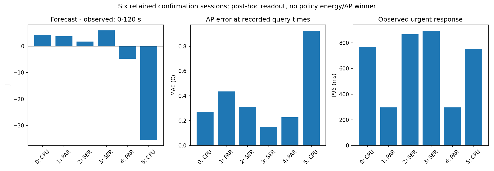

새 실측 0 · 동결 계수 유지 · 기존 독립 확인 6개를 사후 재분석. 에너지/AP 정책 우열 보류, experiment_ready=false.
서비스: 이 96요청에서는 CPU/PAR 모두 기한 96/96, SER 61/96. PAR 긴급 P95는 CPU보다 두 실행에서 약 0.46초 짧았습니다. 인과 효과·다른 부하로 일반화하지 않습니다.
| 실행 | J 오차 | AP MAE °C | 긴급 P95 ms | 전체 기한 |
|---|---|---|---|---|
| 0 CPU | +4.354 | 0.271 | 764.7 | 96/96 |
| 1 PAR | +3.758 | 0.436 | 295.7 | 96/96 |
| 2 SER | +1.753 | 0.311 | 867.3 | 61/96 |
| 3 SER | +6.004 | 0.151 | 896.0 | 61/96 |
| 4 PAR | -4.737 | 0.227 | 295.4 | 96/96 |
| 5 CPU | -35.497 | 0.927 | 751.0 | 96/96 |

에너지는 0~120초. AP는 각 세션의 실제 조회 시각(~35초 이후~180초 전)이며 서로 다른 최고온도 창은 CSV에 명시했습니다. 센서 점은 독립 세션이 아닙니다.
동일 초기 입력의 18개 PC 예측은 새로운 실측이 아닙니다. 과거 에너지 잔차 2×2 조합 대입은 산술 민감도이며 미래 오차 한도·확률·신뢰구간이 아닙니다. 실제 세션 차이는 초기조건/배경활동 차이를 포함합니다.